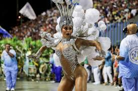
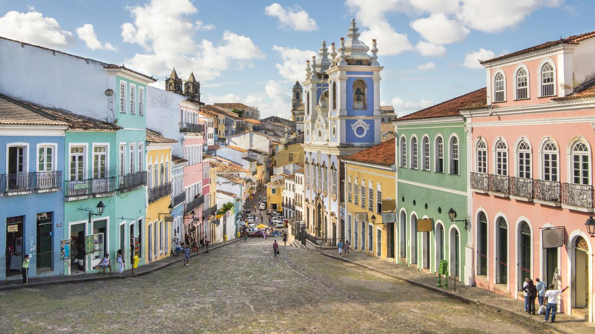
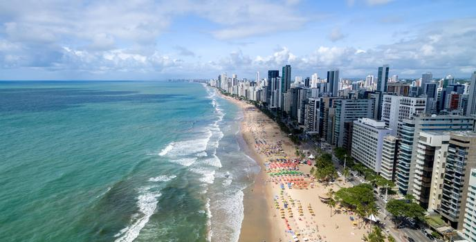

El Carnaval de Brasil nos muestra la riqueza de la cultura brasileña, la alegría de su gente, la delicia de su gastronomía como la feijoada, el vatapá, la picanha, entre otros; también el ritmo de sus danzas, la majestuosidad de sus trajes y carros alegóricos. Durante la época del carnaval, a lo largo y ancho de todo el país, se puede disfrutar de colores, música, tradiciones culturales, y bailes como la samba, el axe, la capoeira, la lambada y el sertanejo.
En cada región de Brasil, la música y el baile pueden variar. Por ejemplo, en algunas ciudades no es la samba la música que más se baila y disfruta en épocas de carnaval, pero sí en todas ellas los disfraces o vestuarios que usan tanto turistas como participantes del Carnaval son coloridos y hermosos. De todos los carnavales de Brasil, el de Río de Janeiro es el más famoso; puedes ver la celebración en el Sambódromo Marqués de Sapucaí. Ahí las escuelas de samba se presentan con una temática diferente y por lo general de una belleza tal, que ver el desfile es toda una explosión de los sentidos.
En muchos casos, los temas presentados por las escuelas son de gran reflexión y dejan mucho más que color y alegría a los sentidos. Además de los desfiles de las escuelas y la fiesta en torno al Sambódromo, el Carnaval de Río de Janeiro ofrece galas privadas y fiestas en las calles de la ciudad, en las cuales puedes participar y que son de una gran belleza cultural.
Si vas a Brasil para el Carnaval también puedes visitar Recife, cuyas playas se conjugan con la alegría del carnaval de la ciudad. Además, puedes visitar otros lugares turísticos como Salvador, capital del estado de Bahía, la cual te sorprenderá con su belleza arquitectónica y natural. No esperes más, Brasil te va a encantar.